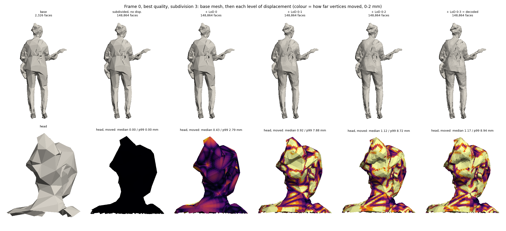

assets/teaser.mp4
Abstract
We build a mesh-based volumetric video pipeline for a calibrated 10-camera RGB-D rig. Depth is fused into a sparse truncated signed distance field (8³ voxel bricks, 3.5 mm voxels, 2 cm truncation) with push-pull hole filling and silhouette and free-space carving. Marching cubes extracts the surface; a repair stage keeps thin triangles that a naive cleanup would delete, a guard on the raw field removes the inner shell that carving leaves under the skin, and boundary loops up to 300 edges are closed by ear clipping. The cleaned mesh is decimated, UV-unwrapped and texture-baked, then compressed with the MPEG V-DMC test model and exported to Alembic. Every change was tested live on a watertightness readout in Unity before being kept.
Pipeline
Key numbers
Making the mesh watertight
Each idea was switched on and off in Play mode while a live readout reported open edges, hole loops, non-manifold edges, pieces and genus. Ideas that did not move the numbers were removed.
| Change | Measured effect | |
|---|---|---|
| Keep thin marching-cubes slivers in repair | ~66k slivers per frame had been deleted: open edges −91 %, hole loops −98 %, genus −90 % | kept |
| Smooth the field near the surface | Genus −55 %, pieces −45 %, non-manifold edges to ~0 | kept |
| Inner-shell guard on raw values (max jump 1.9) | Removes the shell ~2 cm under the skin, keeps noisy hair (1.5 on smoothed values ate the hair) | kept |
| Enclosed depth dropouts count as inside | Small extra gain on top of smoothing | kept |
| Ear-clipped hole caps (≤ 300 edges) | Closes every remaining small hole; no fan spikes; no duplicate faces | kept |
| Wider fill reach | No measurable change | removed |
| Unknown voxels as outside | No measurable change | removed |
| Centre-fan hole caps | Long spikes across large unseen holes | replaced |
V-DMC compression
Presets (subdivision 3, decimation target 0.7, one frame)
| Preset | liftingQP / texture QP | Size / frame | Geometry error (median / p99) |
|---|---|---|---|
| Best quality | 10,16,16 / 18 | 147 KB | 0.0 / 1.2 mm |
| Compromise | 24,34,34 / 22 | 88 KB | 0.1 / 0.7 mm |
| Best compression | 24,34,34 / 34 | 54 KB | 0.1 / 0.7 mm |
Subdivision levels (liftingQP 22,28,28, texture QP 22)
| Subdivisions | Decoded faces | Size / frame | Geometry error (p99) |
|---|---|---|---|
| 1 | 87,452 | 91.0 KB | 1.4 mm |
| 2 | 349,808 | 92.4 KB | 1.4 mm |
| 3 | 1,399,232 | 90.1 KB | 0.7 mm |
Point-to-surface distance from the decoded mesh to the exported mesh. Geometry stays near or under 1 mm in every case; the texture QP decides most of the size and the look, and the base mesh (~37 KB) is the largest fixed cost.
Very coarse base mesh: decimation target 0.04, 20-frame sequence
To cut the base mesh, the largest fixed cost above, the encoder's decimation target was lowered from 0.7 to 0.04: the source frames (~30,000 faces) become a base mesh of only 2,326 faces, and the detail is carried by the subdivision displacements instead. All runs encode the same 20 frames (two groups of 10, inter coding on), 1024×1024 texture.

Presets (subdivision 3)
| Preset | liftingQP / texture QP | Size / frame | Base / disp. / texture | Geometry error (median / p99) |
|---|---|---|---|---|
| Best quality | 10,16,16 / 18 | 111 KB | 7 / 30 / 64 % | 0.20 / 3.7 mm |
| Compromise | 24,34,34 / 22 | 66 KB | 11 / 18 / 70 % | 0.37 / 3.8 mm |
| Best compression | 24,34,34 / 34 | 31 KB | 23 / 39 / 38 % | 0.37 / 3.8 mm |
Subdivision levels (liftingQP 22,28,28, texture QP 22)
| Subdivisions | Decoded faces / frame | Size / frame | Geometry error (median / p99) |
|---|---|---|---|
| 1 | 9,304 | 53 KB | 0.35 / 6.1 mm |
| 2 | 37,216 | 62 KB | 0.31 / 4.1 mm |
| 3 | 148,864 | 68 KB | 0.33 / 3.7 mm |
- The base mesh shrinks to ~7 KB per frame (from ~37 KB), and the compromise preset drops from 88 to 66 KB per frame (~16 Mbit/s at 30 fps); best compression reaches 31 KB.
- Geometry pays for it: the median error stays at 0.2–0.4 mm, but the p99 rises to ~3.7 mm at subdivision 3 (0.7 mm with the 0.7 target), and to 6.1 mm at subdivision 1 — a 2,326-face base cannot follow fine shapes (fingers, hair, folds) that the displacements then have to reach.
- Geometry settings decide the error: compromise and best compression share the same liftingQP and decode to the same geometry; the texture QP only changes size and look.
- The base mesh was coded intra in every frame (0 B inter at subdivision 3) even with inter coding on, so the temporal saving is still to be had.
- Encoding takes 38–48 s per frame (mostly texture compression and pre-processing); decoding 20 frames takes 2.6 s.
Error: distance from every decoded vertex to the source frame's surface, all 20 frames, in millimetres (encoder units 2.34 per mm).
Limitations
- Large areas no camera sees (behind a held instrument, between the legs) stay open; capping them would be a guess.
- Some inner shell remains in the full-resolution mesh (2.2 % double-layer faces), mostly removed by decimation (0.4 %).
- Export runs offline at about 33 s per frame; the live mesh is for preview.
- Thresholds are tuned for this rig and need re-tuning for other rigs or sensors.
Next
- Raycast preview of the TSDF in Unity, to tell volume problems from meshing problems.
- Surface Nets as an alternative to marching cubes: fewer slivers, fewer and better-shaped triangles.
- A decimation target between 0.04 and 0.7: the base mesh is now ~7 KB per frame at 0.04, but its p99 geometry error rose to ~3.7 mm; a middle target should keep most of the size saving at closer to 1 mm.
- Get the base mesh coded inter (it is still intra in every frame) to save across frames.
BibTeX
@misc{rehman2026watertightmeshcapture,
title = {Watertight Volumetric Mesh Capture with MPEG V-DMC Compression},
author = {Rehman, Abdul},
year = {2026},
note = {French Touch Factory / ITHACA, project page}
}